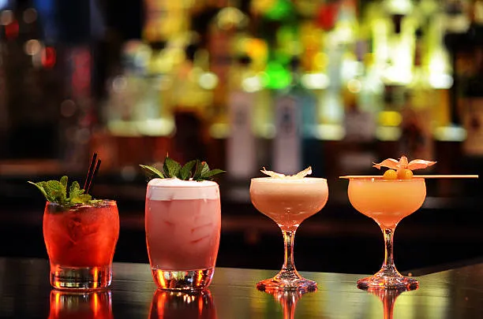
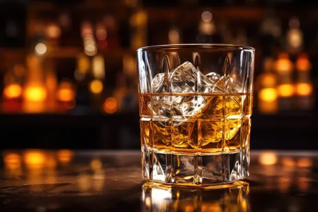
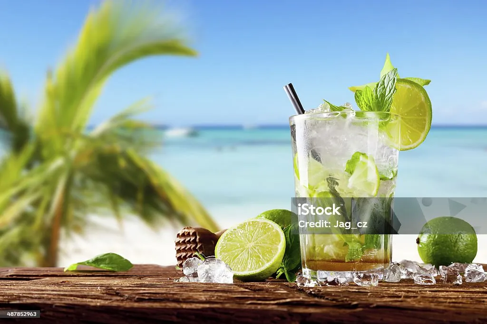

1. Cócteles
Un cóctel o coctel es una preparación a base de una mezcla de diferentes bebidas, que contiene por lo general dos o más tipos de bebidas, aunque algunas de ellas pueden ser bebidas no alcohólicas, a base de ingredientes como zumos, frutas, miel, leche o crema, especias, etc.
2. Champán
La copa champañera o de champán es una copa con una boca ancha y un cáliz poco profundo. Por lo general, puede contener entre 180 y 240 ml de bebida. Se usa en particular para el champán y otros vinos espumosos.
3. Whisky
La bebida por excelencia de la antigüedad era el vino, por lo que la aparición del whisky se sitúa en el siglo XV. Parece que los monasterios de monjes cristianos de la Edad Media fueron los responsables del desarrollo de la destilación.
4. Mojito
El mojito es un cóctel popular originario de Cuba, compuesto de ron, limón, azúcar (tradicionalmente jugo de caña de azúcar), menta y agua mineral con gas. La combinación de sabor dulce, cítrico y menta complementa el sabor del ron.
